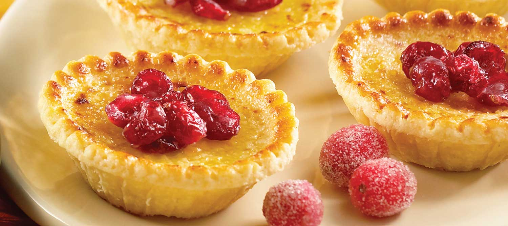

<!DOCTYPE html>
<html>
<head>
	<title>Petite Treats Bakery</title>
	<link rel='stylesheet' type='text/css' href='style.css'>
	<link rel="icon" href="images/logo.png" type="image/png" sizes="16x16">
	<meta http-equiv="Content-Type" content="text/html; charset=iso-8859-1">
</html>

<body>
<h1>Petite Treats</h1>
<a class=home href="index.html"><b>Home</b></a>
<a class=specials href="specials.html">Specials (25% Discount!)</a>
<a class=nav href="menu.html">Menu</a>
<a class=nav href="contact.html">Contact</a>
<a class=nav href="newsletter.html">Newsletter</a>
<a class=nav href="about.html">About Us</a>

<h2> Custard Tart </h2>
<p>  </p>
<p> Our milk, eggs and butter are fresh, locally sourced and organic. We believe these ingredients reflect in both the quality and the taste of our custard tarts, we believe they are a must try. </p>
<p> Ingredients used: </p>
<ul>
	<li> Milk </li>
	<li> Eggs </li>
	<li> Strawberries</li>
	<li> Sugar </li>
	<li> Butter </li>
	<li> Caramel </li>
</ul>
<p> <b>Price: $3.95</b> </p>
<p> <a href="grab.html"></a> </p>
<p> <a href="maps.html"></a> </p>

<footer>
	<p class=footer>Copyright &copy; 2021, Petite Treats, 123 Prize Lane, Kirwan QLD.  <a href="plan.html">Visit site plan</a></p>
</footer>

</body>
</html>